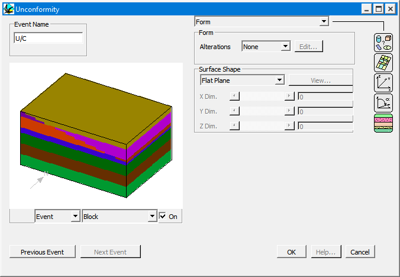
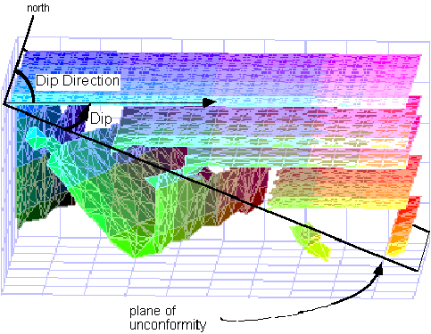

Unconformity
In order to define an unconformity event place an Unconformity icon  in the History window.
in the History window.
You will then be provided with the Unconformity definition window.

Unconformities are planar and are infinite in extent. The X,Y,Z coordinates define one point on the plane of the unconformities (or the top right hand corner of the bounding rectangle of a DXF surface, if defined), and the other parameters are normal structural definitions. A new stratigraphy above the unconformity will also have to be defined.
| GROUP | NAME | FUNCTION |
|---|---|---|
| Form | Alterations: | |
| None | No alteration halo associated with this event | |
| Top | Alteration halo on hanging wall side of fault | |
| Bottom | Alteration halo on foot wall side of fault | |
| Both | Alteration halo on both sides of fault | |
| Edit | Brings up Alteration Profile window | |
| Surface Shape | Flat Plane | Flat planar unconformity |
| DXF Surface | Part of unconformity plane defined by DXF triangulated surface | |
| View | View grey scale image of DXF surface topography | |
| X Dim | Scaling factor for X direction of plane | |
| Y Dim | Scaling factor for Y direction of plane | |
| Z Dim | Scaling factor for Z direction of plane |
| Position | X | X position of one point on unconformity plane (top right hand corner of DXF surface bounding rectangle) |
| Y | Y position of one point on unconformity plane(top right hand corner of DXF surface bounding rectangle) | |
| Z | Z position of one point on unconformity plane | |
| Orientation | Dip Dir | Dip Direction of unconformity Plane |
| Dip | Dip of unconformity Plane |

Noddy · open source under the MIT licence · Loop3D/noddy_qt